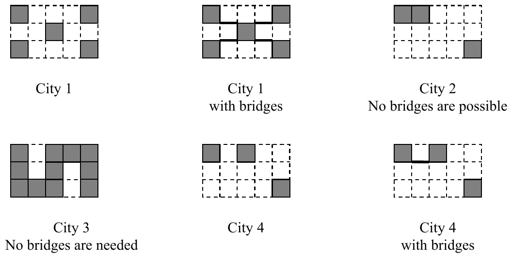

The 27th Annual ACM International Collegiate Programming Contest World Finals sponsored by IBM · Problem A
The City Council of New Altonville plans to build a system of bridges connecting all of its downtown buildings together so people can walk from one building to another without going outside. You must write a program to help determine an optimal bridge configuration.
New Altonville is laid out as a grid of squares. Each building occupies a connected set of one or more squares. Two occupied squares whose corners touch are considered to be a single building and do not need a bridge. Bridges may be built only on the grid lines that form the edges of the squares. Each bridge must be built in a straight line and must connect exactly two buildings.
For a given set of buildings, you must find the minimum number of bridges needed to connect all the buildings. If this is impossible, find a solution that minimizes the number of disconnected groups of buildings. Among possible solutions with the same number of bridges, choose the one that minimizes the sum of the lengths of the bridges, measured in multiples of the grid size. Two bridges may cross, but in this case they are considered to be on separate levels and do not provide a connection from one bridge to the other.
The figure below illustrates four possible city configurations. City 1 consists of five buildings that can be connected by four bridges with a total length of 4. In City 2, no bridges are possible, since no buildings share a common grid line. In City 3, no bridges are needed because there is only one building. In City 4, the best solution uses a single bridge of length 1 to connect two buildings, leaving two disconnected groups (one containing two buildings and one containing a single building).

The input data set describes several rectangular cities. Each city description begins with a line containing two integers r and c, representing the size of the city on the north-south and east-west axes measured in grid lengths (1 ≤ r ≤ 50 and 1 ≤ c ≤ 50). These numbers are followed by exactly r lines, each consisting of c hash (“#”) and dot (“.”) characters. Each character corresponds to one square of the grid. A hash character corresponds to a square that is occupied by a building, and a dot character corresponds to a square that is not occupied by a building.
The input data for the last city will be followed by a line containing two zeros.
For each city description, print two or three lines of output as shown below. The first line consists of the city number. If the city has fewer than two buildings, the second line is the sentence “No bridges are needed.” If the city has two or more buildings but none of them can be connected by bridges, the second line is the sentence “No bridges are possible.” Otherwise, the second line is “N bridges of total length L” where N is the number of bridges and L is the sum of the lengths of the bridges of the best solution. (If N is 1, use the word “bridge” rather than “bridges.”) If the solution leaves two or more disconnected groups of buildings, print a third line containing the number of disconnected groups.
Print a blank line between cases. Use the output format shown in the example.
3 5 #...# ..#.. #...# 3 5 ##... ..... ....# 3 5 #.### #.#.# ###.# 3 5 #.#.. ..... ....# 0 0
City 1 4 bridges of total length 4 City 2 No bridges are possible. 2 disconnected groups City 3 No bridges are needed. City 4 1 bridge of total length 1 2 disconnected groups